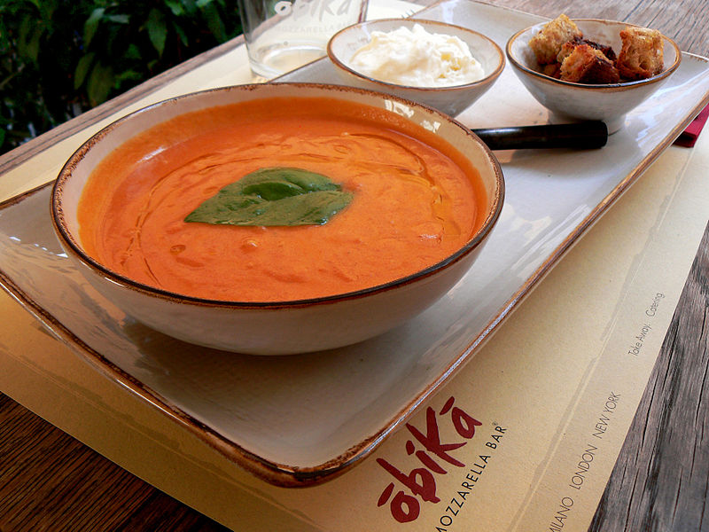

Creamiest ever Tomato soup

Description
This is the creamiest tomato soup I have ever had. It is simple and tasty, this can erase you hunger every other time you're running out of time to get somewhere else.
Ingredients
- 1 can diced tomatoes (or 29oz)
- 1 can condensed chicken broth, undiluted
- 2 tbsp butter
- 2 tbsp white sugar
- 1/4 tsp baking soda
- 2 cups heavy whipping cream
Steps
- In a large stock pot, combine tomatoes, chicken broth, butter, sugar, onion, and baking soda. Bring to a boil over medium-high heat; reduce heat to low and simmer for 1 hour.
- Stir in cream; cook until heated through and serve